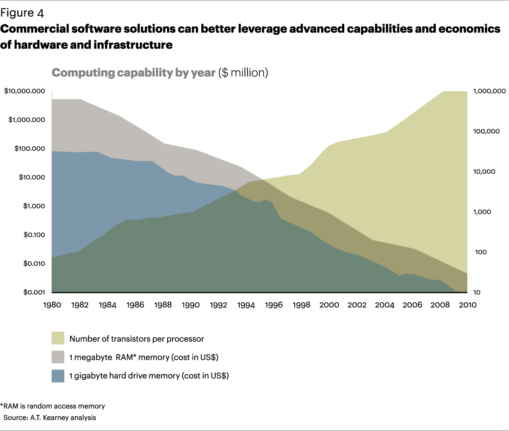
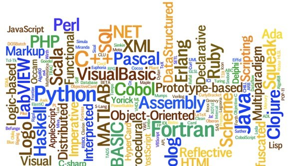
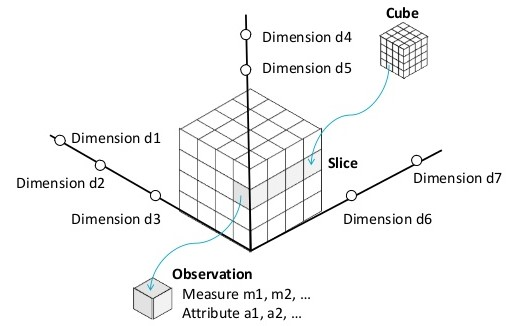
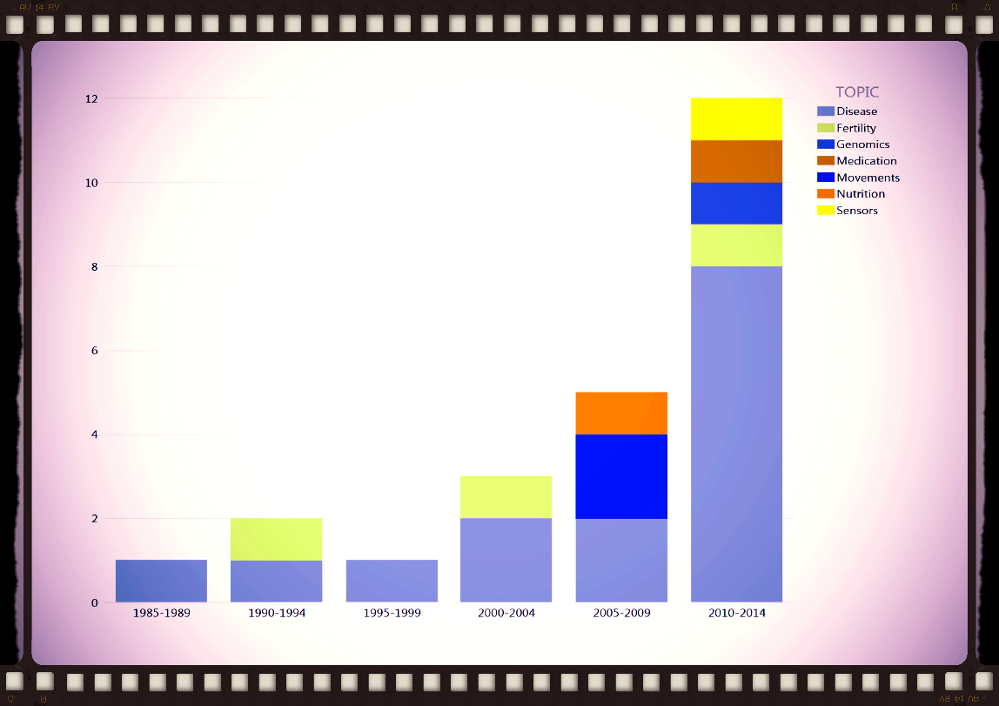

Dairy Data Analytics
An Introduction to Big Data
Data science
Is changing at an incredible speed

It's more fun to compute
Cost of HARDWARE
Is changing at an incredible speed, 2 examples:
The future of hardware
“The observation that, over the history of computing hardware, the number of transistors in a dense integrated circuit has doubled approximately every 18 months.”
Moore's law

Future of software languages
Community driven change every 3 years.
Future of software
function which_language(age, skills ) {
if( age > 5, skill = 0 )
{randomselect(
R
SAS
JAVA/SCALA
PYTHON
SQL)
}
}
Not easy to choose, trends are changing
year to year.
I changed 4 times this year.
Future of software packages

Community driven every ??? years
Extremely active Apache Software community.
What is Big Data?
"Big data is a broad term for data sets so large or complex that traditional data processing applications are inadequate. Challenges include analysis, capture, data curation, search, sharing, storage, transfer, visualization, and information privacy."

Characteristics
of Big Data
- Volume
- Velocity
- Variety
- Veracity
- Validity
- Volatility
Volume
- Full bovine genome ~ 3 Gb
- Currently this can be stored in around 1 Gb for DNA per 1000 cows
- 5-10 Gb for RNA seq per cow
- A result of ease of access to the internet, unstructured data (eg. free text and pictures) has emerged and is believed to account for 85% of all data in the world.
Velocity
- The rate at which data flows and changes into the dataset has exponentially increased, following a similar pattern to that of volume
- New data is continuously flowing in during clinical trials instead of at the end of the trial -> need for version control
Variety in data sources
- Structural database heterogeneity, syntax heterogeneity, implementation heterogeneity and semantic heterogeneity hold this Big Data to get properly utilized.
Variety in data dimensions
Variety in people
Veracity & Validity
refers to the biases, noise and correctness in data.
Rarely seen in animal science to report data quality!
Report data quality
I strongly advocate the reporting data quality in animal science!
- Number of missing values
- Number of outliers, approach to outliers
The fact that it is missing, or that it is an outlier is a new feature which can be analyzed!
Volatility
Refers to how long is data valid and how long should it be stored. In this world of real time data you need to determine at what point is data no longer relevant to the current analysis.
Who pays for the bill to keep the data stored somewhere, after the end of a trial?
Challenges
for data driven projects
Communication
- My personal opinion on email …it doesn’t work for data intensive projects
- Skype chats work (One-on-one and group-chats)
Collaboration
- Collaboration during iteration
- Task management is logged, assigned and monitored
- Weekly checks on to-do, doing, done
Co-visualisation
- Tableau, Qlik, and power bi offer great visualization possibilities
- Open-viz to others as review?

Co-creation
- Most recent data is always available for everyone without downloading latest file from ftp, email
- Currently data is shared among parties using RESTfull, secure WEB-APIs
- Coordinated set of components, connectors, and data elements within a distributed hypermedia system, where the focus is on component roles and a specific set of interactions between data elements rather than implementation details.
- Data privacy can be assured
- Documentation can be provided within the API (Swagger)
Cocoding
- Statistical code base is shared using version control, other contributors can merge share and document models within the GplusE group
- Documentation has been put in wiki pages, which makes referencing to ongoing JIRA discussions possible.
- If needed one can make new task from documentation, back and forth.